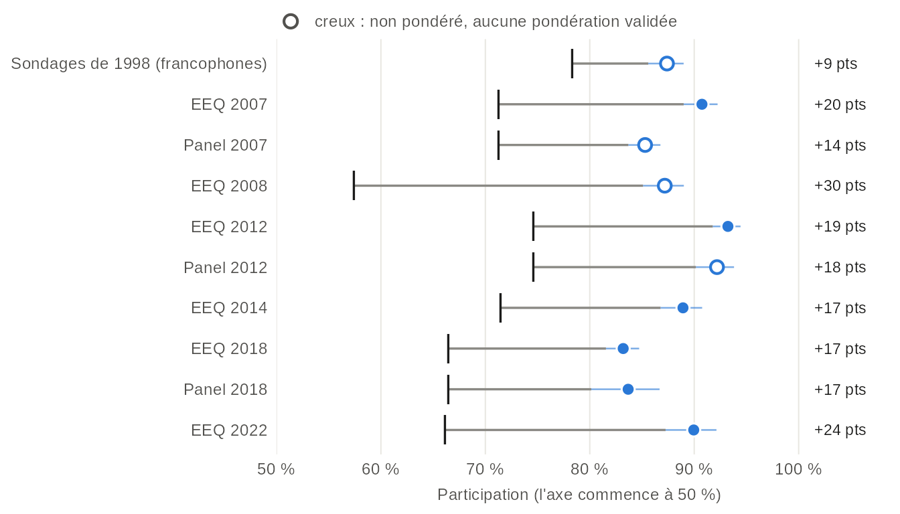
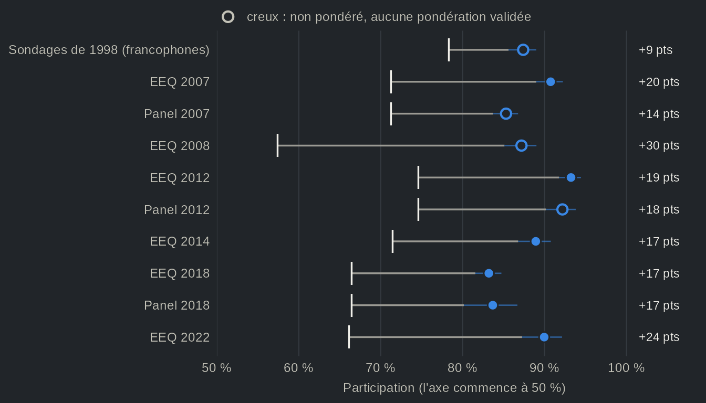
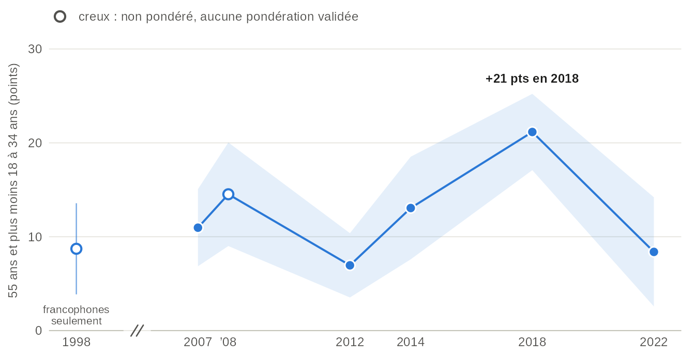
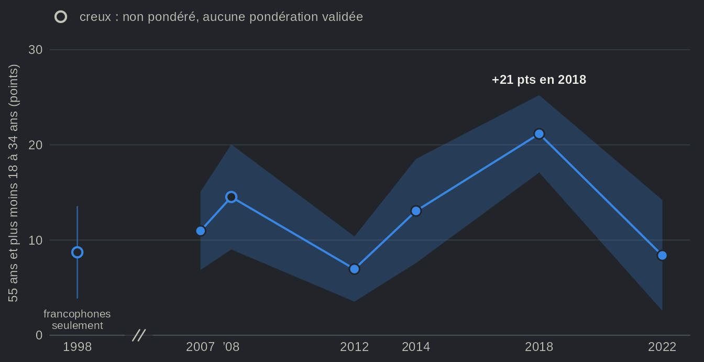
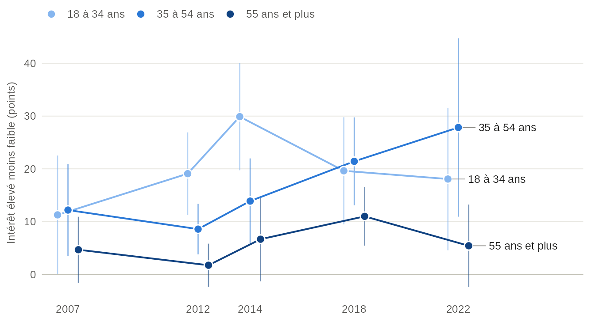
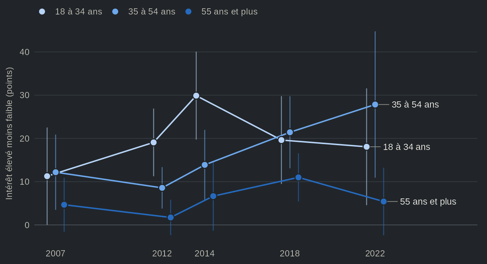

Qui vote ? L'âge, l'intérêt pour la politique et la participation au Québec
Source:vignettes/articles/fr-participation.Rmd
fr-participation.RmdCette page télécharge 11 études (environ 16 Mo) la
première fois qu’elle s’exécute.
options(qesR.cache = "disk") les garde sur le disque pour
les sessions suivantes.
Au Québec, la participation électorale a reculé. Selon Élections Québec, elle est passée de 78 % en 1998 à 66 % en 2022, avec un creux de 57 % en 2008. La croyance populaire attribue ce recul aux jeunes électrices et électeurs, et elle n’est pas sans fondement : le fait que les jeunes votent moins que leurs aînés est l’un des constats les plus solides de l’étude des comportements électoraux, et il s’accompagne au Canada d’une explication bien établie. Blais et collaborateurs (2004) montrent que le déclin de la participation aux élections fédérales tient surtout aux générations nées après le baby-boom, qui votent moins que leurs aînés ne le faisaient au même âge, en bonne partie parce qu’elles s’intéressent moins à la politique et voient moins le vote comme un devoir. Or, l’essentiel de ce que nous savons de l’écart d’âge provient des élections fédérales. Dans cette page, nous nous appuyons sur les Études électorales québécoises pour répondre à deux questions. Quelle est l’ampleur de l’écart d’âge dans la participation déclarée à chaque élection provinciale depuis 1998 ? Et quelle part de cet écart l’intérêt pour la politique explique-t-il ?
Notre réponse est ambivalente. D’une part, les répondants de 18 à 34 ans déclarent voter moins que ceux de 55 ans et plus à chaque élection, avec un écart de 11 points de pourcentage en 2007 et de 21 en 2018, et ils s’intéressent moins à la politique. D’autre part, lorsque nous comparons des jeunes et des aînés qui se disent aussi intéressés les uns que les autres, l’essentiel de l’écart demeure : en 2018, il passe de 21 à 18 points. Autrement dit, l’intérêt fait partie de l’explication, mais il n’en représente qu’une petite part à la plupart des élections.
Les enquêtes surestiment la participation
Avant de nous pencher sur l’âge, précisons que les enquêtes surestiment la participation, et les Études électorales québécoises ne font pas exception. En 2022, 90 % des répondants disent avoir voté, alors que la participation officielle est de 66 %. Deux mécanismes l’expliquent (Selb et Munzert, 2013). Premièrement, les personnes qui votent acceptent plus volontiers de répondre à une enquête politique. Deuxièmement, certaines personnes qui n’ont pas voté disent l’avoir fait. La pondération ne corrige ni l’un ni l’autre : elle ajuste chaque échantillon aux données du recensement sur l’âge, le sexe et la langue (et, selon l’étude, la région ou la scolarité), et non à la participation.


Source : Études électorales québécoises, participation déclarée après l'élection, toutes les études qui l'ont demandée ; participation officielle d'Élections Québec. La participation officielle rapporte les bulletins déposés aux électeurs inscrits, alors que les enquêtes interrogent des adultes : les deux ne portent donc pas exactement sur les mêmes personnes. Points : participation déclarée, pondérée, avec intervalles de confiance à 95 % ; points creux : non pondérée. Les sondages de 1998 n'ont interrogé que des francophones. Les jeunes de 16 et 17 ans de l'étude de 2018, qui ne pouvaient pas voter, sont laissés de côté.
Vue en tableau
| Élection | Étude | Participation déclarée, % [IC à 95 %] | n | Participation officielle, % | Écart | Pondération |
|---|---|---|---|---|---|---|
| 1998 | Sondages de 1998 | 87,4 [85,6 ; 89,0] | 1483 | 78,3 | +9 pts | non pondéré : aucune pondération validée |
| 2007 | EEQ 2007 | 90,7 [89,0 ; 92,2] | 2162 | 71,2 | +20 pts | pondéré |
| 2007 | Panel 2007 | 85,3 [83,7 ; 86,8] | 2054 | 71,2 | +14 pts | non pondéré : aucune pondération validée |
| 2008 | EEQ 2008 | 87,2 [85,1 ; 89,0] | 1131 | 57,4 | +30 pts | non pondéré : aucune pondération validée |
| 2012 | EEQ 2012 | 93,2 [91,8 ; 94,4] | 1486 | 74,6 | +19 pts | pondéré |
| 2012 | Panel 2012 | 92,2 [90,2 ; 93,8] | 844 | 74,6 | +18 pts | non pondéré : aucune pondération validée |
| 2014 | EEQ 2014 | 88,9 [86,8 ; 90,8] | 1499 | 71,4 | +17 pts | pondéré |
| 2018 | EEQ 2018 | 83,2 [81,5 ; 84,7] | 2635 | 66,4 | +17 pts | pondéré |
| 2018 | Panel 2018 | 83,7 [80,1 ; 86,7] | 842 | 66,4 | +17 pts | pondéré |
| 2022 | EEQ 2022 | 90,0 [87,3 ; 92,1] | 1215 | 66,1 | +24 pts | pondéré |
Toutes les études se situent au-dessus du chiffre officiel, de 9 à 30 points, et l’écart est le plus grand en 2008, l’élection où la participation officielle a été la plus faible. Plus largement, la participation déclarée varie beaucoup moins que la participation officielle. D’une Étude électorale québécoise à l’autre, elle va de 83 % à 93 %, alors que la participation officielle va de 57 % à 78 %. Autrement dit, ces enquêtes renseignent mal sur le niveau de la participation ; elles servent davantage à comparer des groupes, et c’est l’usage que nous en faisons plus bas. Notons toutefois qu’une comparaison entre groupes ne vaut que ce que valent les déclarations qui la fondent. Si les jeunes abstentionnistes affirment avoir voté plus souvent que les abstentionnistes plus âgés, l’écart entre les déclarations des jeunes et celles des aînés sous-estime l’écart réel ; s’ils l’affirment moins souvent, il le surestime. Les enquêtes ne permettent pas de trancher. La sélection appelle la même prudence : les jeunes qui acceptent de répondre à une enquête politique sont sans doute plus engagés que les autres jeunes de leur âge, ce qui, le cas échéant, réduirait l’écart entre les déclarations.
L’écart d’âge, élection par élection


Source : une Étude électorale québécoise par élection, et les sondages de 1998 (francophones seulement). Bande : intervalle de confiance à 95 % de la différence. Pondéré ; points creux (1998 et 2008) : non pondéré, aucune pondération validée. L'axe horizontal est en années, avec une coupure entre 1998 et 2007. La vue en tableau donne aussi la participation de chaque groupe d'âge, ainsi que les panels menés par Claire Durand aux élections de 2007, 2012 et 2018.
Vue en tableau
| Élection | Étude | 18 à 34 ans, % | 35 à 54 ans, % | 55 ans et plus, % | Écart, 55+ moins 18-34 [IC à 95 %] | Pondération |
|---|---|---|---|---|---|---|
| 1998 | Sondages de 1998 | 81,6 | 88,8 | 90,3 | +8,7 pts [3,9 ; 13,6] | non pondéré : aucune pondération validée |
| 2007 | EEQ 2007 | 84,8 | 91,4 | 95,7 | +11,0 pts [6,9 ; 15,1] | pondéré |
| 2007 | Panel 2007 | 73,5 | 86,4 | 91,0 | +17,5 pts [12,9 ; 22,2] | non pondéré : aucune pondération validée |
| 2008 | EEQ 2008 | 78,9 | 86,5 | 93,5 | +14,5 pts [9,0 ; 20,0] | non pondéré : aucune pondération validée |
| 2012 | EEQ 2012 | 89,5 | 92,7 | 96,4 | +7,0 pts [3,5 ; 10,4] | pondéré |
| 2012 | Panel 2012 | 89,0 | 91,7 | 93,7 | +4,7 pts [-1,3 ; 10,7] | non pondéré : aucune pondération validée |
| 2014 | EEQ 2014 | 80,9 | 89,8 | 93,9 | +13,1 pts [7,6 ; 18,5] | pondéré |
| 2018 | EEQ 2018 | 70,3 | 81,8 | 91,4 | +21,2 pts [17,1 ; 25,2] | pondéré |
| 2018 | Panel 2018 | 73,8 | 81,9 | 91,4 | +17,5 pts [8,3 ; 26,8] | pondéré |
| 2022 | EEQ 2022 | 86,5 | 85,8 | 94,9 | +8,4 pts [2,6 ; 14,2] | pondéré |
Premier constat : l’écart d’âge est présent à chaque élection. Les répondants de 55 ans et plus déclarent voter davantage que ceux de 18 à 34 ans, de 11 points en 2007, de 21 en 2018 et de 8 en 2022. Son ampleur, en revanche, est loin d’être stable. L’écart est le plus faible en 2012 (7 points), alors que la participation officielle atteignait 75 %, et le plus grand en 2018, lorsqu’elle est tombée à 66 %. En 2018, le recul de la participation se voit chez les jeunes, et à peine chez les aînés : par rapport à 2014, la participation déclarée baisse de 11 points chez les 18 à 34 ans (à 70 %) et de 2 chez les 55 ans et plus (à 91 %). On pourrait en conclure que, lorsque la participation recule, elle recule chez les jeunes. L’élection de 2022 ne cadre pourtant pas avec cette lecture. La participation officielle y est de 66 %, comme en 2018, mais l’écart ne fait pas la moitié de celui de 2018, et les 18 à 34 ans déclarent voter à peu près aussi souvent que les 35 à 54 ans (86 % dans les deux cas, bien que le chiffre des jeunes ne repose que sur 269 répondants).
L’intérêt pour la politique compte surtout avant 55 ans


Source : Études électorales québécoises de 2007, 2012, 2014, 2018 et 2022, pondérées (l'étude de 2008 portait plutôt sur l'intérêt pour l'élection). Intérêt faible : pas du tout ou pas très intéressé par la politique ; élevé : très intéressé (sur les questions de 0 à 10 de 2007 et de 2022, de 0 à 4 et de 8 à 10). Les questions à quatre points et de 0 à 10 ne découpent pas le public de la même façon : mieux vaut comparer les groupes d'âge à l'intérieur d'une élection qu'une élection à l'autre. Traits : intervalles de confiance à 95 % de la différence ; un écart qui repose sur moins de 30 répondants n'est pas tracé. La participation de chaque groupe est dans la vue en tableau.
Vue en tableau
| Élection | Étude | Âge | Intérêt | Participation déclarée, % [IC à 95 %] | n | Pondération |
|---|---|---|---|---|---|---|
| 2007 | EEQ 2007 | 18 à 34 ans | Intérêt faible | 75,7 [65,4 ; 83,7] | 117 | pondéré |
| 2007 | EEQ 2007 | 18 à 34 ans | Intérêt moyen | 87,0 [80,8 ; 91,5] | 246 | pondéré |
| 2007 | EEQ 2007 | 18 à 34 ans | Intérêt élevé | 87,0 [78,9 ; 92,2] | 197 | pondéré |
| 2007 | EEQ 2007 | 35 à 54 ans | Intérêt faible | 82,2 [72,8 ; 88,8] | 127 | pondéré |
| 2007 | EEQ 2007 | 35 à 54 ans | Intérêt moyen | 92,9 [88,2 ; 95,8] | 369 | pondéré |
| 2007 | EEQ 2007 | 35 à 54 ans | Intérêt élevé | 94,4 [89,8 ; 97,0] | 238 | pondéré |
| 2007 | EEQ 2007 | 55 ans et plus | Intérêt faible | 91,3 [83,4 ; 95,6] | 110 | pondéré |
| 2007 | EEQ 2007 | 55 ans et plus | Intérêt moyen | 97,1 [94,1 ; 98,6] | 310 | pondéré |
| 2007 | EEQ 2007 | 55 ans et plus | Intérêt élevé | 95,9 [92,9 ; 97,7] | 403 | pondéré |
| 2012 | EEQ 2012 | 18 à 34 ans | Intérêt faible | 77,1 [69,6 ; 83,2] | 174 | pondéré |
| 2012 | EEQ 2012 | 18 à 34 ans | Intérêt moyen | 95,2 [91,6 ; 97,3] | 236 | pondéré |
| 2012 | EEQ 2012 | 18 à 34 ans | Intérêt élevé | 96,2 [90,0 ; 98,6] | 119 | pondéré |
| 2012 | EEQ 2012 | 35 à 54 ans | Intérêt faible | 89,3 [84,4 ; 92,8] | 211 | pondéré |
| 2012 | EEQ 2012 | 35 à 54 ans | Intérêt moyen | 94,9 [91,2 ; 97,1] | 292 | pondéré |
| 2012 | EEQ 2012 | 35 à 54 ans | Intérêt élevé | 97,9 [93,6 ; 99,3] | 126 | pondéré |
| 2012 | EEQ 2012 | 55 ans et plus | Intérêt faible | 97,4 [89,8 ; 99,4] | 64 | pondéré |
| 2012 | EEQ 2012 | 55 ans et plus | Intérêt moyen | 94,6 [90,0 ; 97,2] | 162 | pondéré |
| 2012 | EEQ 2012 | 55 ans et plus | Intérêt élevé | 99,1 [93,8 ; 99,9] | 88 | pondéré |
| 2014 | EEQ 2014 | 18 à 34 ans | Intérêt faible | 66,4 [56,4 ; 75,1] | 138 | pondéré |
| 2014 | EEQ 2014 | 18 à 34 ans | Intérêt moyen | 86,0 [78,4 ; 91,3] | 167 | pondéré |
| 2014 | EEQ 2014 | 18 à 34 ans | Intérêt élevé | 96,3 [90,1 ; 98,6] | 84 | pondéré |
| 2014 | EEQ 2014 | 35 à 54 ans | Intérêt faible | 81,4 [73,8 ; 87,1] | 171 | pondéré |
| 2014 | EEQ 2014 | 35 à 54 ans | Intérêt moyen | 96,2 [92,4 ; 98,1] | 279 | pondéré |
| 2014 | EEQ 2014 | 35 à 54 ans | Intérêt élevé | 95,2 [87,9 ; 98,2] | 126 | pondéré |
| 2014 | EEQ 2014 | 55 ans et plus | Intérêt faible | 89,6 [80,0 ; 94,9] | 86 | pondéré |
| 2014 | EEQ 2014 | 55 ans et plus | Intérêt moyen | 94,3 [87,9 ; 97,4] | 269 | pondéré |
| 2014 | EEQ 2014 | 55 ans et plus | Intérêt élevé | 96,3 [90,6 ; 98,6] | 169 | pondéré |
| 2018 | EEQ 2018 | 18 à 34 ans | Intérêt faible | 60,6 [53,8 ; 67,0] | 269 | pondéré |
| 2018 | EEQ 2018 | 18 à 34 ans | Intérêt moyen | 75,2 [69,6 ; 80,1] | 317 | pondéré |
| 2018 | EEQ 2018 | 18 à 34 ans | Intérêt élevé | 80,2 [71,4 ; 86,8] | 120 | pondéré |
| 2018 | EEQ 2018 | 35 à 54 ans | Intérêt faible | 73,4 [65,5 ; 80,0] | 159 | pondéré |
| 2018 | EEQ 2018 | 35 à 54 ans | Intérêt moyen | 80,8 [75,1 ; 85,5] | 241 | pondéré |
| 2018 | EEQ 2018 | 35 à 54 ans | Intérêt élevé | 94,8 [88,8 ; 97,7] | 114 | pondéré |
| 2018 | EEQ 2018 | 55 ans et plus | Intérêt faible | 83,8 [78,0 ; 88,2] | 226 | pondéré |
| 2018 | EEQ 2018 | 55 ans et plus | Intérêt moyen | 92,2 [89,6 ; 94,2] | 697 | pondéré |
| 2018 | EEQ 2018 | 55 ans et plus | Intérêt élevé | 94,8 [92,0 ; 96,6] | 456 | pondéré |
| 2022 | EEQ 2022 | 18 à 34 ans | Intérêt faible | 73,9 [61,9 ; 83,1] | 95 | pondéré |
| 2022 | EEQ 2022 | 18 à 34 ans | Intérêt moyen | 94,0 [81,8 ; 98,2] | 105 | pondéré |
| 2022 | EEQ 2022 | 18 à 34 ans | Intérêt élevé | 91,9 [78,9 ; 97,2] | 67 | pondéré |
| 2022 | EEQ 2022 | 35 à 54 ans | Intérêt faible | 69,5 [50,9 ; 83,4] | 80 | pondéré |
| 2022 | EEQ 2022 | 35 à 54 ans | Intérêt moyen | 84,7 [76,8 ; 90,3] | 150 | pondéré |
| 2022 | EEQ 2022 | 35 à 54 ans | Intérêt élevé | 97,3 [93,1 ; 99,0] | 164 | pondéré |
| 2022 | EEQ 2022 | 55 ans et plus | Intérêt faible | 91,1 [80,5 ; 96,2] | 67 | pondéré |
| 2022 | EEQ 2022 | 55 ans et plus | Intérêt moyen | 94,0 [87,5 ; 97,2] | 194 | pondéré |
| 2022 | EEQ 2022 | 55 ans et plus | Intérêt élevé | 96,5 [92,7 ; 98,3] | 284 | pondéré |
Deuxième constat : la première partie de l’explication habituelle tient. À chaque élection, les jeunes s’intéressent moins à la politique que leurs aînés. En 2018, 37 % des répondants de 18 à 34 ans se disent « pas du tout » ou « pas très » intéressés, contre 19 % de ceux de 55 ans et plus. L’intérêt est aussi lié à la participation, mais surtout avant 55 ans. Avant cet âge, les répondants très intéressés déclarent voter jusqu’à 30 points de plus que les moins intéressés ; chez les 55 ans et plus, la différence est d’au plus 11 points. Sans surprise, les répondants plus âgés sont près du plafond : la plupart déclarent voter, quel que soit leur intérêt. Autrement dit, l’écart d’âge est le plus grand chez les moins intéressés. En 2018, il atteint 23 points entre aînés et jeunes peu intéressés, contre 15 chez les très intéressés.
À intérêt égal, l’essentiel de l’écart demeure
Si les jeunes votent moins parce qu’ils s’intéressent moins à la politique, comparer des jeunes et des aînés qui ont le même intérêt devrait réduire l’écart de façon marquée. C’est ce que nous vérifions maintenant. Pour chaque élection, nous comparons l’écart d’âge parmi l’ensemble des répondants à l’écart parmi les répondants qui ont donné la même réponse à la question sur l’intérêt.


Source : une Étude électorale québécoise par élection, de 2007 à 2022, répondants qui ont répondu aux questions de participation, d'âge et d'intérêt. L'écart à intérêt égal compare les jeunes et les aînés qui ont donné la même réponse à la question d'intérêt (une régression linéaire pondérée de la participation déclarée sur le groupe d'âge, avec un terme par réponse). Pondéré ; point creux (2008) : non pondéré, et sa question portait sur l'intérêt pour l'élection. La vue en tableau donne la part de chaque groupe d'âge dont l'intérêt est faible.
Vue en tableau
| Élection | Étude | Écart d'âge, tous les répondants [IC à 95 %] | Écart d'âge, même intérêt [IC à 95 %] | Différence | Intérêt faible, 18 à 34 ans, % | Intérêt faible, 55 ans et plus, % | n | Intérêt pour | Pondération |
|---|---|---|---|---|---|---|---|---|---|
| 2007 | EEQ 2007 | +11,0 pts [6,9 ; 15,1] | +10,5 pts [6,5 ; 14,5] | −0,5 pts | 19,9 | 13,4 | 2117 | la politique, 0 à 10 | pondéré |
| 2008 | EEQ 2008 | +14,5 pts [9,0 ; 20,0] | +12,3 pts [7,1 ; 17,5] | −2,2 pts | 50,2 | 34,8 | 1129 | l'élection, 0 à 10 | non pondéré : aucune pondération validée |
| 2012 | EEQ 2012 | +6,7 pts [3,3 ; 10,1] | +4,9 pts [1,7 ; 8,1] | −1,8 pts | 31,9 | 20,5 | 1472 | la politique, quatre points | pondéré |
| 2014 | EEQ 2014 | +12,9 pts [7,4 ; 18,4] | +10,0 pts [4,7 ; 15,3] | −2,9 pts | 36,3 | 20,1 | 1489 | la politique, quatre points | pondéré |
| 2018 | EEQ 2018 | +20,6 pts [16,5 ; 24,7] | +17,6 pts [13,6 ; 21,6] | −3,0 pts | 36,7 | 18,9 | 2599 | la politique, quatre points | pondéré |
| 2022 | EEQ 2022 | +8,5 pts [2,7 ; 14,4] | +3,8 pts [-2,1 ; 9,8] | −4,7 pts | 35,3 | 11,9 | 1206 | la politique, 0 à 10 | pondéré |
Troisième constat : pour l’essentiel, l’écart ne se réduit pas. À 5 élections sur 6, à intérêt égal, l’écart d’âge diminue de moins du tiers. En 2018, il passe de 21 à 18 points ; en 2007, il bouge à peine (0,5 point). L’exception est l’élection de 2022. Parmi les répondants qui ont aussi répondu à la question sur l’intérêt, l’écart est cette année-là d’environ 9 points ; à intérêt égal, il diminue de plus de la moitié, à environ 4 points, et ne peut plus être distingué de zéro. Cette année-là, l’écart d’intérêt entre les groupes d’âge est bien plus marqué qu’en 2007, l’autre étude qui a posé la même question de 0 à 10 : 35 % des 18 à 34 ans se disent peu ou pas du tout intéressés, contre 12 % des 55 ans et plus (20 % et 13 % en 2007). En somme, l’intérêt n’explique qu’une petite part de l’écart d’âge à la plupart des élections québécoises, et environ la moitié en 2022.
Bilan
Au final, l’écart d’âge se confirme, mais l’explication habituelle ne tient qu’en partie. L’écart est réel, présent à chaque élection depuis 1998, et les jeunes s’intéressent moins à la politique que leurs aînés. Toutefois, l’intérêt n’explique que quelques points d’un écart qui a atteint 21 points en 2018. L’exception est 2022 : l’intérêt explique alors environ la moitié d’un écart beaucoup plus faible. L’essentiel de l’écart tient donc à autre chose. Blais et collaborateurs (2004) évoquent deux autres sources : le cycle de vie, la participation augmentant avec l’âge au sein de chaque génération, et un sens du devoir civique moins marqué chez les générations récentes. Le premier fait partie de l’écart d’âge lui-même, puisqu’à une élection donnée l’effet de l’âge ne peut être distingué de celui de la génération ; le second n’est mesuré que par l’étude de 2022, ce qui ne permet pas de le suivre d’une élection à l’autre ; nous le laissons donc de côté. Notre analyse n’est toutefois pas sans limite. Premièrement, il s’agit de déclarations, et les enquêtes surestiment la participation : l’écart réel entre jeunes et aînés peut être plus grand ou plus petit que l’écart entre leurs déclarations. Deuxièmement, comme pour le cycle de vie, comparer les groupes d’âge à chaque élection ne permet pas de distinguer l’effet de l’âge de celui de la génération. Les jeunes de 2018 voteront-ils comme leurs aînés en vieillissant, ou garderont-ils une participation plus faible toute leur vie ? Les prochaines Études électorales québécoises aideront à répondre à cette question.
Pour aller plus loin
- Blais, André, Elisabeth Gidengil, Neil Nevitte et Richard Nadeau. 2004. « Where Does Turnout Decline Come From? » European Journal of Political Research 43 (2) : 221–236. https://doi.org/10.1111/j.1475-6765.2004.00152.x
- Rubenson, Daniel, André Blais, Patrick Fournier, Elisabeth Gidengil et Neil Nevitte. 2004. « Accounting for the Age Gap in Turnout ». Acta Politica 39 (4) : 407–421. https://doi.org/10.1057/palgrave.ap.5500079
- Selb, Peter, et Simon Munzert. 2013. « Voter Overrepresentation, Vote Misreporting, and Turnout Bias in Postelection Surveys ». Electoral Studies 32 (1) : 186–196. https://doi.org/10.1016/j.electstud.2012.11.004
- Bélanger, Éric, Philippe Mongrain, Thomas Gareau-Paquette et Valérie-Anne Mahéo. 2025. « A Party that Went Viral? The Drivers of Support for the Parti Conservateur du Québec in the 2022 Election ». Canadian Journal of Political Science/Revue canadienne de science politique 58 (2) : 277–296. https://doi.org/10.1017/S0008423924000829
Bélanger et collaborateurs (2025) s’appuient sur la même étude de 2022 pour expliquer le vote en faveur du Parti conservateur du Québec (PCQ), un parti dont l’électorat était plus jeune que celui de la plupart des autres partis (seul celui de Québec solidaire l’était autant). L’écart entre les enquêtes et les résultats officiels pour le choix de vote, plutôt que pour la participation, fait l’objet d’un autre exemple.
Les données dans R
La page repose sur trois variables regroupées : turnout,
la participation déclarée après l’élection ; age_group3 ;
et pol_interest, l’intérêt pour la politique ramené à une
échelle de 0 à 1, que la question compte quatre points ou aille de 0 à
10.
h <- qes_harmonize(
studies = "all",
targets = c("turnout", "age_group3", "pol_interest"),
missing = "reasons", quiet = TRUE
)La participation de chaque groupe d’âge en 2018, et l’écart d’âge à
intérêt égal, avec le package survey (le h de l’appel
ci-dessus) :
library(survey)
d18 <- qes_design(h[h$study == "qes2018" & !h$eligible_voter %in% FALSE, ], weight = "weight_post")
d18 <- subset(d18, !is.na(turnout) & !is.na(age_group3))
svyby(~I(turnout == "Yes"), ~age_group3, d18, svyciprop, vartype = "ci", method = "logit")
#> age_group3 I(turnout == "Yes") ci_l ci_u
#> 18-34 18-34 0.7026868 0.6641214 0.7385673
#> 35-54 35-54 0.8177600 0.7804389 0.8499568
#> 55 and over 55 and over 0.9142527 0.8964074 0.9292665
d18 <- update(subset(d18, !is.na(pol_interest)), voted = as.numeric(turnout == "Yes"),
age = factor(as.character(age_group3)), answer = factor(pol_interest))
coef(summary(svyglm(voted ~ age + answer, d18)))[2:3, ]
#> Estimate Std. Error t value Pr(>|t|)
#> age35-54 0.1008001 0.02527438 3.988234 6.840858e-05
#> age55 and over 0.1762605 0.02045754 8.615921 1.185130e-17À propos des données
- Études. Toutes les études qui ont demandé, après l’élection, si le répondant avait voté ; les sondages CROP ne l’ont pas fait. Outre une Étude électorale québécoise par élection, les vues en tableau comprennent les panels menés par Claire Durand aux élections de 2007, 2012 et 2018, qui ont interrogé les mêmes répondants avant et après le vote. La participation officielle correspond aux bulletins déposés sur les électeurs inscrits, selon Élections Québec.
- Intérêt pour la politique. Les études de 2012 à 2018 posaient une question à quatre points, codée 1 ; 0,7 ; 0,3 et 0 ; celles de 2007 et de 2022, une question de 0 à 10, divisée par 10. Les valeurs de la question à quatre points relèvent d’une convention de codage et non d’une mesure : mieux vaut donc comparer les catégories d’intérêt à l’intérieur d’une élection. L’étude de 2008 demandait plutôt, après le vote, à quel point les répondants s’étaient intéressés à l’élection (de 0 à 10), et le panel de 2007 portait sur l’intérêt pour la campagne ; les panels de 2012 et de 2018 n’ont pas de question comparable.
- Pondération. La pondération postélectorale de chaque étude qui en a une validée ; les autres ne sont pas pondérées et sont représentées en points creux (voir le tableau des pondérations).
- Qui a été interrogé. Les sondages de 1998 n’ont interrogé que des francophones, et les répondants qu’ils ont interrogés de nouveau après le vote ne sont pas représentatifs de l’ensemble des francophones. L’étude de 2018 a aussi interrogé des jeunes de 16 et 17 ans, qui ne pouvaient pas voter ; ils sont exclus.